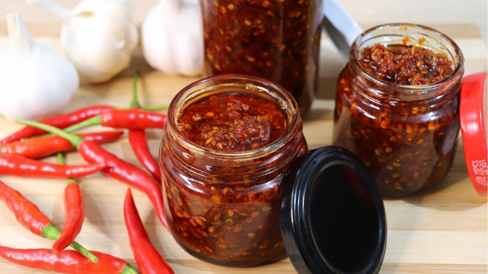

Chili Garlic Oil

Description
Don't have an appetite? Sometimes, a little bit of spice is what our stomach needs and this Chili Garlic Oil is definitely the one for you!
You only need these ingredients and steps to be followed down below!
Ingredients
- Thai chili pepper
- Garlic
- Canola oil or olive oil
- Star anise
- Bay leaves
- White vinegar
- Hoisin sauce
- Brown sugar
- Salt
Steps
- Prepare a ¼ lb of Thai chili pepper, 2 garlic head and a blender (to make things easier) or you can cut it yourself.
- Cut the pedicle (stem) of the chili pepper, peel the garlic head as well as the skin layer of the garlic clove.
- Put the chili pepper, garlic clove and 2 cups of oil in the blender. If you don't have a blender and cut it manually, move on to step 4.
-
Pour the minced chili pepper and garlic to the pan and set it to low heat.
If you cut it manually, pour 2 cups of oil into the pan first, pepper and garlic right after.
- Add 1 star anise and 2 bay leaves after setting it to low heat.
- Stir it for 30 minutes and take out the bay leaves as well as the star anise then pour 1 tablespoon of white vinegar.
- Wait for around 3 minutes after pouring the white vinegar and then stir while it's cooking. Remember to set it to low heat while cooking.
- After 10 minutes, the chilies becomes dark and this is when you will turn the heat off.
- After turning the heat off, pour 1 tablespoon of Hoisin sauce, 1 teaspoon of brown sugar and 1 ½ teaspoon of salt to the pan.
- Stir until all the ingredients are mixed nicely.
- After that, transfer it to a mason jar.
- Voila, You can now enjoy your Chili Garlic Oil!